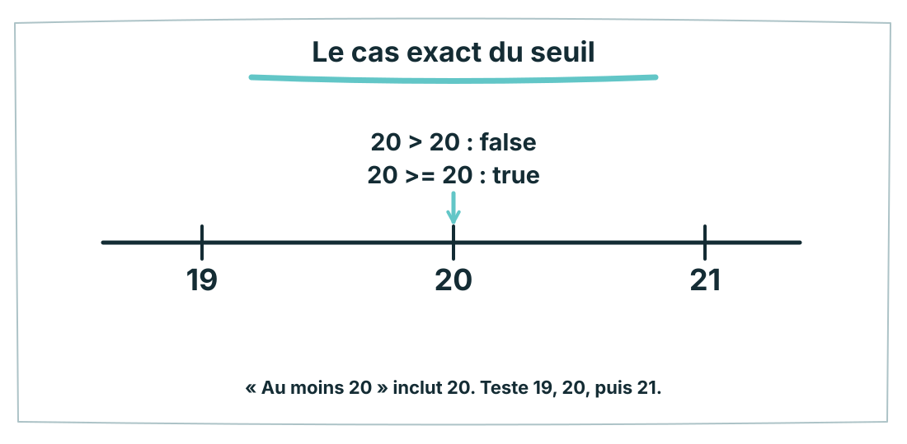
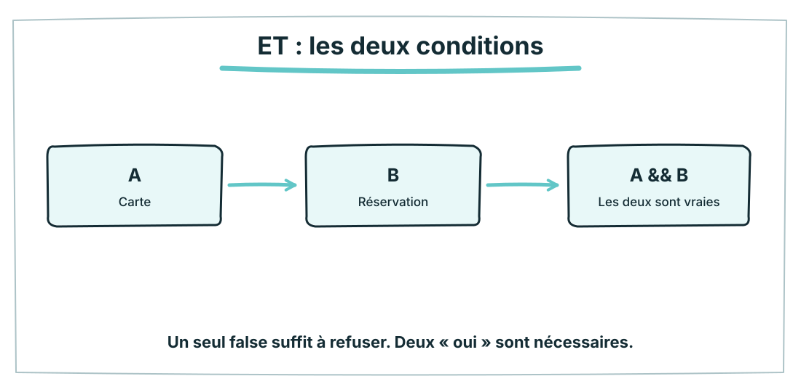
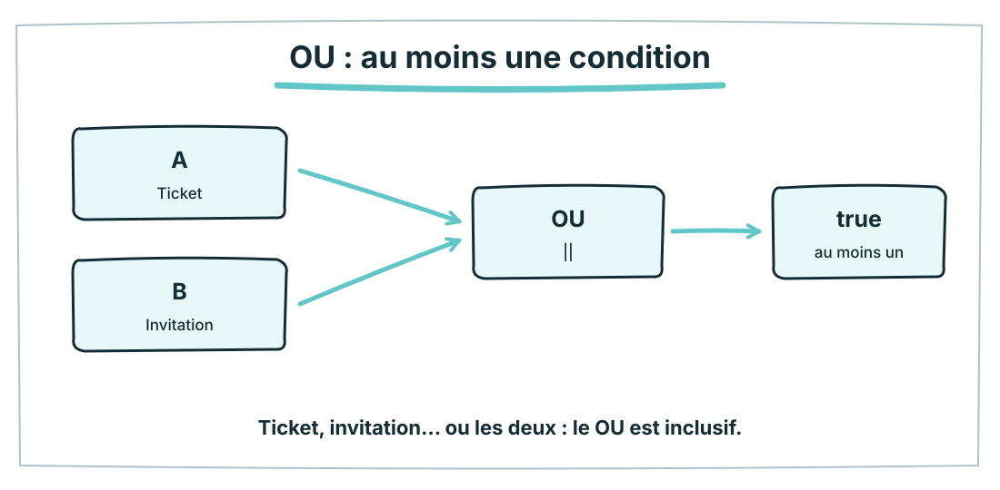
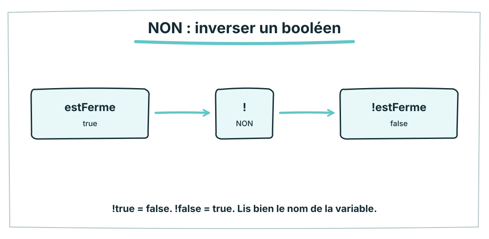
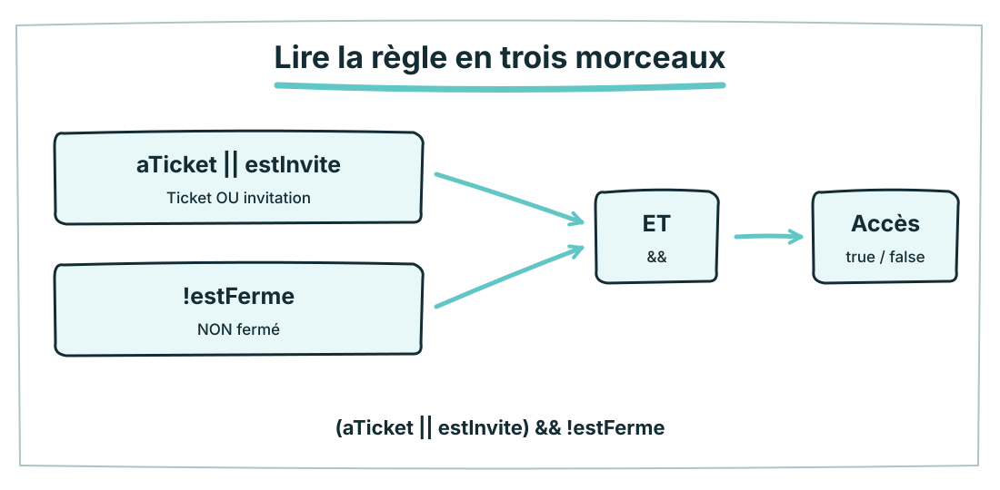
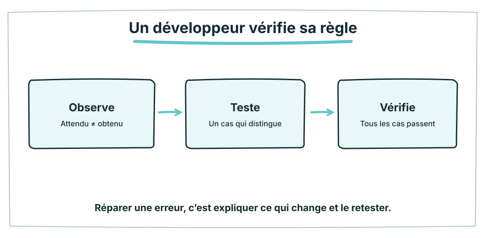
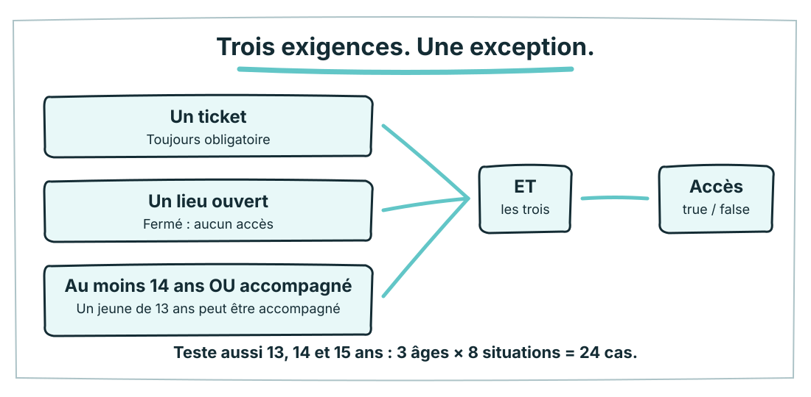

1 OCTOBRE 2026 · A1 · S04
1 OCTOBRE 2026 · A1 · S04Diagnostic pratique · Défi 1/4 · 3 minutes
Écris. Puis lance.
Crée annoncerDepart(), sans paramètre. Elle affiche « La partie commence ». Appelle-la une fois.
Nom ou code élève : ____________________
20 minutes au total. 3 + 4 + 5 + 6 minutes de code, puis 2 minutes pour remettre. Dans le hub, écris dans l’éditeur. Ce papier est le secours sans écran.
Écris → Exécute → Compare.
Teste un cas, observe la console, corrige une chose, puis reteste. Les indices sont facultatifs et conservés dans le suivi.
Ce que ton code doit réussir
□ Console : La partie commence.
□ La phrase vient de la fonction appelée, pas d’un affichage isolé.
Mon code
Mon test : attendu → obtenu
□ Je l’explique. □ Je le marque « À reprendre ». Les deux permettent de conserver le travail, sans attribuer une fausse réussite.
1 OCTOBRE 2026 · A1 · S04 Diagnostic pratique · Défi 2/4 · 4 minutes
Une fonction, deux prénoms.
Écris saluer(prenom). Elle affiche « Bonjour » suivi du prénom reçu. Appelle-la avec « Nora », puis « Sami ».
Ton code est à écrire. Pas de projet ni de fichier HTML à créer.
Écris → Exécute → Compare.
Teste un cas, observe la console, corrige une chose, puis reteste. Les indices sont facultatifs et conservés dans le suivi.
Ce que ton code doit réussir
□ saluer("Nora") → Bonjour Nora.
□ saluer("Sami") → Bonjour Sami.
□ saluer("Lina") → Bonjour Lina.
Mon code
Mon test : attendu → obtenu
□ Je l’explique. □ Je le marque « À reprendre ». Les deux permettent de conserver le travail, sans attribuer une fausse réussite.
1 OCTOBRE 2026 · A1 · S04 Diagnostic pratique · Défi 3/4 · 5 minutes
Renvoie, puis garde.
Écris doubler(nombre) : elle renvoie le double. Garde le résultat de doubler(6) dans scoreDouble, puis affiche cette variable.
Ton code est à écrire. Pas de projet ni de fichier HTML à créer.
Écris → Exécute → Compare.
Teste un cas, observe la console, corrige une chose, puis reteste. Les indices sont facultatifs et conservés dans le suivi.
Ce que ton code doit réussir
□ doubler(6) → nombre 12.
□ doubler(9) → nombre 18 ; doubler(0) → 0.
□ scoreDouble contient 12 ; console.log affiche cette variable.
Mon code
Mon test : attendu → obtenu
□ Je l’explique. □ Je le marque « À reprendre ». Les deux permettent de conserver le travail, sans attribuer une fausse réussite.
1 OCTOBRE 2026 · A1 · S04 Diagnostic pratique · Défi 4/4 · 6 minutes
Réutilise ton résultat.
Écris additionner(pommes, poires), qui renvoie leur somme. Garde additionner(2, 3) dans total. Réutilise total avec 4 dans un second appel, stocké dans totalSuivant. Affiche les deux variables.
Ton code est à écrire. Pas de projet ni de fichier HTML à créer.
Écris → Exécute → Compare.
Teste un cas, observe la console, corrige une chose, puis reteste. Les indices sont facultatifs et conservés dans le suivi.
Ce que ton code doit réussir
□ additionner(2, 3) → nombre 5.
□ additionner(4, 7) → 11 ; additionner(0, 0) → 0.
□ total contient 5 ; totalSuivant réutilise total et contient 9.
Mon code
Mon test : attendu → obtenu
□ Je l’explique. □ Je le marque « À reprendre ». Les deux permettent de conserver le travail, sans attribuer une fausse réussite.
2 minutes de remise : vérifie les quatre programmes, clique sur « Remettre mes quatre programmes » et attends le reçu serveur. Un code incomplet peut être remis.
1 OCTOBRE 2026 · A1 · S04 01 · Vrai ou faux ? · 15 min
Une comparaison pose une question.
Prévois un résultat, puis vérifie-le. Change une seule chose à la fois.

01 · OBSERVE
Prévois les résultats. Attention au mot « à partir de ».
02 · TESTE
Choisis l’expression qui traduit exactement la règle.
Ma preuve
Je peux expliquer une réussite et un refus avec les valeurs exactes.
1 OCTOBRE 2026 · A1 · S04 02 · Les deux à la fois · 15 min
Deux conditions. Les deux obligatoires.
Prévois un résultat, puis vérifie-le. Change une seule chose à la fois.

01 · OBSERVE
La salle s’ouvre avec une carte ET une réservation. Change les deux interrupteurs, prédis, puis teste.
02 · TESTE
Complète la table de aCarte && aReserve sans rouvrir le schéma.
03 · RECONSTRUIS
Choisis sans recopier le modèle.
Ma preuve
Je peux expliquer une réussite et un refus avec les valeurs exactes.
1 OCTOBRE 2026 · A1 · S04 03 · Au moins un · 10 min
Au moins une possibilité.
Prévois un résultat, puis vérifie-le. Change une seule chose à la fois.

01 · OBSERVE
Pour entrer au concert, un ticket OU une invitation suffit. Les deux ensemble sont aussi acceptés.
02 · TESTE
Complète aTicket || estInvite. Que se passe-t-il quand les deux valent true ?
Ma preuve
Je peux expliquer une réussite et un refus avec les valeurs exactes.
1 OCTOBRE 2026 · A1 · S04 04 · Inverser la réponse · 10 min
NON inverse une réponse.
Prévois un résultat, puis vérifie-le. Change une seule chose à la fois.

01 · OBSERVE
Le lieu est fermé ? Alors il n’est pas accessible. Teste estFerme, puis !estFerme.
02 · TESTE
Traduis « le lieu n’est pas fermé ».
Ma preuve
Je peux expliquer une réussite et un refus avec les valeurs exactes.
1 OCTOBRE 2026 · A1 · S04 05 · Une règle complète · 20 min
Une entrée… avec une limite.
Prévois un résultat, puis vérifie-le. Change une seule chose à la fois.

01 · OBSERVE
Le concert accepte un ticket OU une invitation, ET il ne doit pas être fermé.
02 · TESTE
Vérifie la règle complète. Les quatre cas « fermé » doivent tous refuser.
03 · RECONSTRUIS
Complète le if. Le mini-labo essaie les huit combinaisons, pas seulement la première.
Ma preuve
Je peux expliquer une réussite et un refus avec les valeurs exactes.
1 OCTOBRE 2026 · A1 · S04 06 · Trouver le cas qui casse · 15 min
Un seul contre-exemple suffit.
Prévois un résultat, puis vérifie-le. Change une seule chose à la fois.

01 · OBSERVE
Le développeur a écrit OU au lieu de ET. Quel essai révèle le bug ?
02 · TESTE
Change la condition. Garde les deux messages : OK et REFUS.
03 · RECONSTRUIS
Pour jouer : au moins 14 points ET une autorisation. Répare le seuil, puis vérifie les six cas.
04 · EXPLIQUE
Complète avec un exemple précis : « J’ai vu… J’ai changé… J’ai retesté… ».
Ma preuve
Je peux expliquer une réussite et un refus avec les valeurs exactes.
1 OCTOBRE 2026 · A1 · S04 Entraînement progressif · bloc 25 min
Niveau 1 · Un seuil.
Complète estMajeur(age). La fonction doit renvoyer true à partir de 18 ans. 5 minutes.
function estMajeur(age) {
// Renvoie un booléen.
}
console.log(estMajeur(18));Teste, pas seulement le cas facile.
□ 17 → false
□ 18 → true
□ 19 → true
| Entrées | Je prévois | J’obtiens |
|---|
| ________________ | __________ | __________ |
| ________________ | __________ | __________ |
| ________________ | __________ | __________ |
Les 5 dernières minutes du bloc : explique un cas autorisé et un cas refusé du niveau 3.
1 OCTOBRE 2026 · A1 · S04 Entraînement progressif · bloc 25 min
Niveau 2 · Deux règles.
Écris peutJouer(age, aAccord). Il faut 14 ans ou plus ET un accord. Stocke un appel dans acces, puis affiche acces. 7 minutes.
function peutJouer(age, aAccord) {
// Complète le retour.
}
const acces = peutJouer(14, true);
console.log(acces);Teste, pas seulement le cas facile.
□ Teste le seuil exact.
□ Vérifie aussi le cas sans accord.
□ Affiche la variable acces.
| Entrées | Je prévois | J’obtiens |
|---|
| ________________ | __________ | __________ |
| ________________ | __________ | __________ |
| ________________ | __________ | __________ |
Les 5 dernières minutes du bloc : explique un cas autorisé et un cas refusé du niveau 3.
1 OCTOBRE 2026 · A1 · S04 Entraînement progressif · bloc 25 min
Niveau 3 · Une exception.
Écris peutEntrer(aTicket, estInvite, estFerme). Ticket OU invitation suffisent, mais un lieu fermé refuse toujours. 8 minutes.
function peutEntrer(aTicket, estInvite, estFerme) {
// Regroupe les conditions.
}
console.log(peutEntrer(true, false, false));Teste, pas seulement le cas facile.
□ Vérifie les huit combinaisons.
□ Un lieu fermé doit refuser même avec un ticket.
| Entrées | Je prévois | J’obtiens |
|---|
| ________________ | __________ | __________ |
| ________________ | __________ | __________ |
| ________________ | __________ | __________ |
Les 5 dernières minutes du bloc : explique un cas autorisé et un cas refusé du niveau 3.
1 OCTOBRE 2026 · A1 · S04 Point de maîtrise · 15 min
Une décision. Une preuve.
Cette activité mesure la logique apprise aujourd’hui, pas le diagnostic fonctions.
true && false□ true · □ false · □ Je ne sais pas
true || true□ true · □ false · □ Je ne sais pas
!false□ true · □ false · □ Je ne sais pas
A=true, B=false, ferme=true. Que vaut (A || B) && !ferme ?□ true · □ false · □ Je ne sais pas
Quel test révèle le mieux le bug points > 14 au lieu de points >= 14 ?□ points = 13 · □ points = 14 · □ points = 15 · □ Je ne sais pas
Une preuve avec tes mots
Donne un cas qui a révélé un bug. Qu’as-tu modifié ? Qu’as-tu retesté ?
Sauvegarde au professeur. Vérifie le reçu avant de fermer la page.
1 OCTOBRE 2026 · A1 · S04 Après le bilan · facultatif
Le parc a des exceptions.
24 cas pour vérifier ta règle. Tu peux reprendre plus tard.

Écris accesParc(age, aTicket, estAccompagne, estFerme). Le lieu doit être ouvert, le ticket obligatoire, et il faut avoir au moins 14 ans OU être accompagné.
function accesParc(age, aTicket, estAccompagne, estFerme) {
// Écris la règle sans recopier un exercice précédent.
}
console.log(accesParc(13, true, true, false));□ Aucun accès sans ticket.
□ Aucun accès si le lieu est fermé.
□ Un jeune de 13 ans accompagné peut entrer.
□ Teste 13, 14 et 15 pour les autres situations.